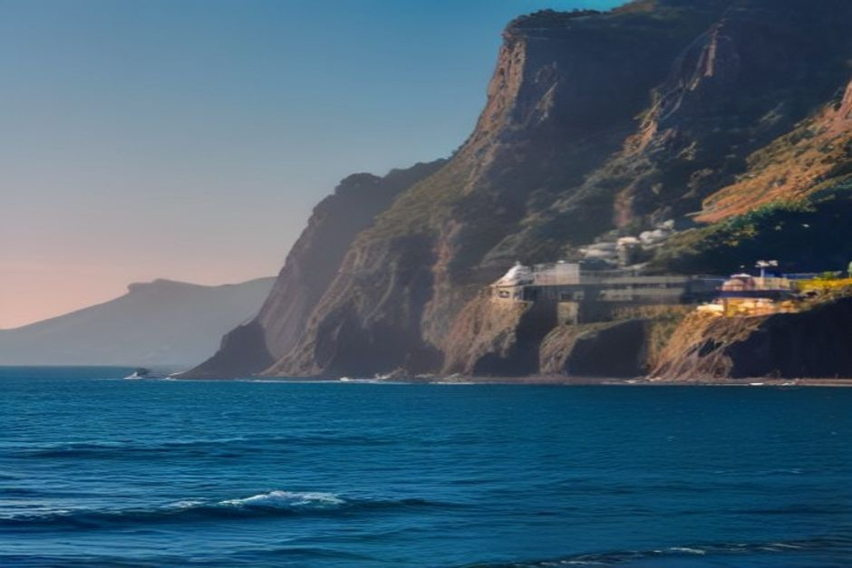
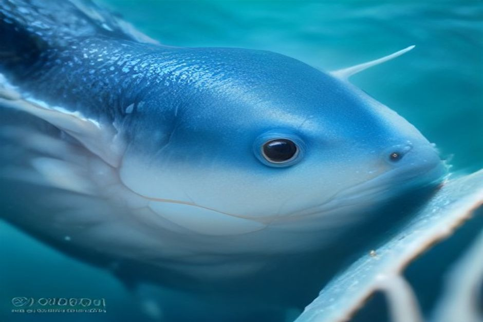

Si busca «delfines Madeira», probablemente quiere saber una cosa: si de verdad los verá. La respuesta honesta es que es muy probable, pero nunca seguro. Madeira se levanta sobre un fondo marino que cae a más de 3.000 metros a pocas millas náuticas de Funchal, y por eso pasa tanta vida cerca de la costa. Aquí tiene lo que suele verse, lo que es una suerte rara, qué pasa con los tiburones y en qué época conviene ir.
Lo que verá casi seguro y lo que no
Conviene empezar por las expectativas, porque son lo que más decide si una salida le deja buen sabor de boca. Los avistamientos más fiables frente a Funchal son los delfines y la ballena piloto, que viven aquí todo el año. Las tortugas dependen del verano, los cachalotes de un paso migratorio y las focas monje de una excursión distinta.
Ningún barco puede garantizar un animal concreto. Son animales salvajes y, cuando aparecen, es un regalo. Lo que sí puede hacer una embarcación pequeña y silenciosa es no espantarlos y quedarse a su lado con el motor apagado.
Delfines en Madeira: tres especies que conviene distinguir
Los delfines mulares son el avistamiento más habitual frente a Funchal, a menudo en grupos de entre 20 y 80 ejemplares. Son curiosos y suelen acercarse solos al barco, surfeando la ola de proa con el motor en marcha o sin él, aunque se quedan más rato cuando se apaga.
Los delfines comunes son más rápidos y acrobáticos. Viajan en grupos grandes, a veces enormes, y se ven todo el año. Suelen dar el encuentro más animado de la salida.
Los delfines moteados del Atlántico son una presencia estacional, sobre todo de junio a septiembre. A los adultos se les reconoce por los costados moteados de gris y blanco. Las crías nacen de un gris liso y las manchas aparecen con la edad.

Ballenas: la piloto es residente, el cachalote es un golpe de suerte
La ballena piloto de aleta corta es la ballena residente de Madeira. Vive aquí todo el año en grupos familiares de 10 a 30 ejemplares. Se mueve despacio y descansa en la superficie durante largos ratos, así que es la más fácil de observar con calma y no solo de entrever. Un barco silencioso con el motor apagado puede quedarse junto a un grupo en reposo varios minutos.
El cachalote es otra historia. Es la ballena dentada más grande del planeta y el avistamiento más raro de esta lista. Pasa en migración y se cita con más frecuencia en primavera y otoño. Cuando aparece, suele quedarse inmóvil en la superficie antes de una inmersión profunda que puede durar 30 minutos. Si lo ve, cuéntelo como un premio, no como algo que se pueda planear.
¿Hay tiburones en Madeira?
Es una de las preguntas que más se repiten, y la respuesta sensata es esta: Madeira está en pleno Atlántico y, como en cualquier océano abierto, hay tiburones en sus aguas. Pero no figuran entre los avistamientos habituales de un paseo en barco por la costa sur, y por eso no aparecen en esta guía como animales que vaya a ver.
Lo que sí encontrará, con muchas más probabilidades, son delfines, ballenas piloto, tortugas y peces voladores. Si lo que le preocupa es bañarse, le recomendamos preguntar a su patrón por las condiciones del día: en nuestras salidas de día hay una parada para nadar en Fajã dos Padres, siempre en calas de la costa y con el barco al lado.
Tortugas bobas: cuestión de verano
Las tortugas bobas suben a respirar durante todo el verano y apenas se inmutan ante un barco silencioso a la deriva. En un día tranquilo no son raros los encuentros a pocos metros. Se ven sobre todo descansando en la superficie, más que nadando.
Peces voladores y mantarrayas: las sorpresas
Con el mar en calma, los peces voladores son casi seguros. Salen disparados de la superficie y planean entre 20 y 30 metros con las aletas pectorales extendidas antes de volver al agua. Es un destello plateado que casi nadie espera la primera vez.
Las mantarrayas son un avistamiento ocasional de los meses cálidos. Suelen verse alimentándose cerca de la superficie, con las aletas en forma de ala rompiendo el agua. Son mucho menos previsibles que los delfines, pero memorables cuando ocurren.
Focas monje: hay que ir a las Desertas
Entre 25 y 30 focas monje del Mediterráneo viven en torno a las Islas Desertas, una reserva natural estricta a unas 22 millas náuticas al sureste de Funchal. Por eso son el único animal de esta lista que no verá en un paseo costero normal. Solo se las busca en excursiones de día completo con operadores autorizados, y aun así un encuentro cercano nunca está garantizado.
Los peces de las calas, lo que sí ve cada día
Entre Funchal y Cabo Girão, las calas cercanas a la costa tienen su propio espectáculo: bancos de lábridos y peces loro, alguna morena escondida entre las rocas y agua lo bastante clara casi todo el año para verlo desde la superficie con gafas y tubo. Es el encuentro cotidiano que llena los huecos entre los avistamientos raros del mar abierto.
Es justo lo que ofrece nuestra salida de día, que combina un baño en Fajã dos Padres, con tablas de paddle, y el recorrido por la costa sur.

Cuándo ir y cómo plantear la salida
- Todo el año: delfines mulares y comunes, y la ballena piloto residente.
- De junio a septiembre: delfines moteados del Atlántico, y en verano las tortugas bobas.
- Primavera y otoño: es cuando se cita con más frecuencia el paso de los cachalotes, aunque sigue siendo raro.
- Meses cálidos: alguna mantarraya ocasional.
No es una excursión de avistamiento especializada y conviene no prometérsela a uno mismo. La mayor parte de lo descrito ocurre en el mismo tramo de costa sur que recorre una salida en barco privado desde Funchal. Si su prioridad son los animales, elija la hora que mejor le venga y deje que el mar decida.
Un barco pequeño ayuda por una razón simple: en Chifbay el barco es para un solo grupo, de hasta 5 personas, con dos patrones de Madeira con licencia. Si aparecen animales, se apaga el motor y nadie tiene prisa. La salida de día sale a las 10:00 o a las 14:00 y dura 2 h 30 hasta Ribeira Brava (500 €) o 3 h hasta Ponta do Sol (600 €). Si prefiere algo más corto, la salida al atardecer sale 1 h 15 antes de la puesta de sol, dura 2 h hasta Cabo Girão (400 €) o 2 h 30 hasta Ribeira Brava (500 €), y no incluye parada para bañarse. Los precios son por el barco entero, no por persona.
A bordo hay comida y bebida, un vídeo en 360° con Insta360, imágenes con dron si el tiempo lo permite y fotos hechas con cámara de verdad. La cancelación es gratuita hasta 24 horas antes de la salida. Se sale desde la Marina do Funchal, pantalán C. Más datos en la información práctica.
Algunos de estos animales se ven en casi cualquier salida. Otros, con suerte, una vez en la vida. Por eso merece la pena mirar el mar con atención.
Y si se queda con la duda de qué opción le conviene más, puede comparar las mejores excursiones en barco en Madeira.